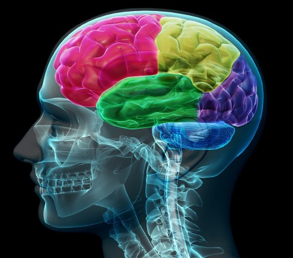

Artículos
Neurociencia y las ciencias PSI
Diagrama conceptual de los lóbulos del cerebro
Bienvenidos a Psicotips, tu espacio de conocimiento en Neuropsicología. En este sitio, hemos creado un lugar dedicado al aprendizaje y la colaboración en el fascinante campo de la Neuropsicología, donde la psicología y la neurología se unen para explorar el funcionamiento de la mente y el cerebro.
Aquí podrás acceder a las mejores recomendaciones, artículos y discusiones sobre los últimos avances en esta disciplina.
Nuestro objetivo es construir una comunidad activa de aprendizaje, en la que podamos compartir conocimientos, experiencias y herramientas que nos ayuden a comprender mejor cómo influyen los procesos neurológicos en nuestra conducta, emociones y pensamientos.
Creemos que, a través del conocimiento compartido, todos podemos fortalecer nuestro autoaprendizaje y crecimiento personal.
Te invitamos a explorar, aprender y participar en nuestro blog. Este es un espacio para dialogar, compartir ideas y enriquecer nuestro entendimiento de la mente humana.
¡Acompáñanos en esta emocionante aventura de descubrimiento!

Diagrama conceptual de los lóbulos del cerebro
Puedes contactarnos en: lcarri27@estuadiante.ibero.com.co